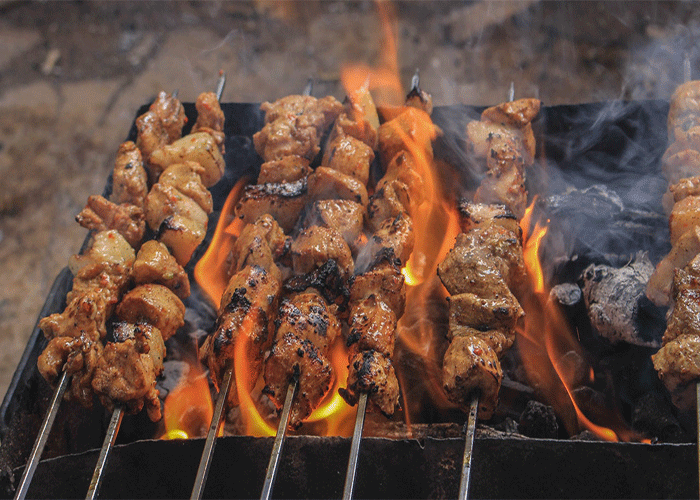
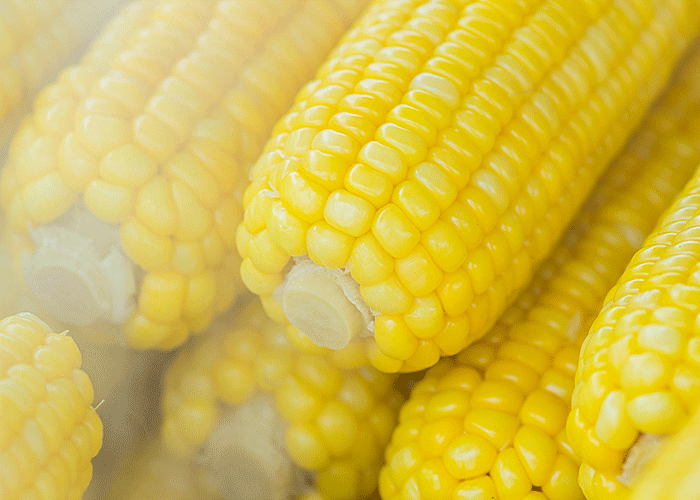
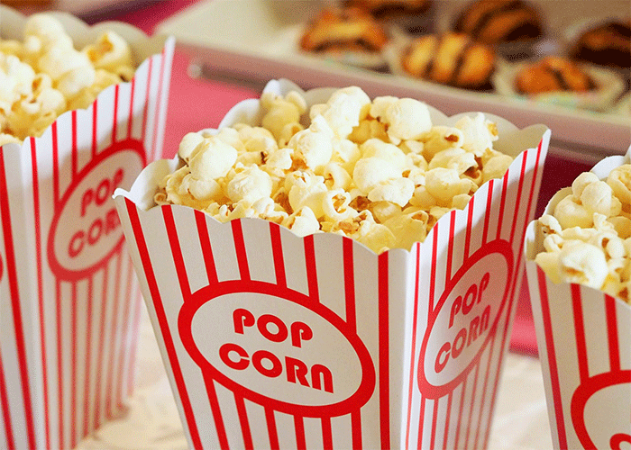
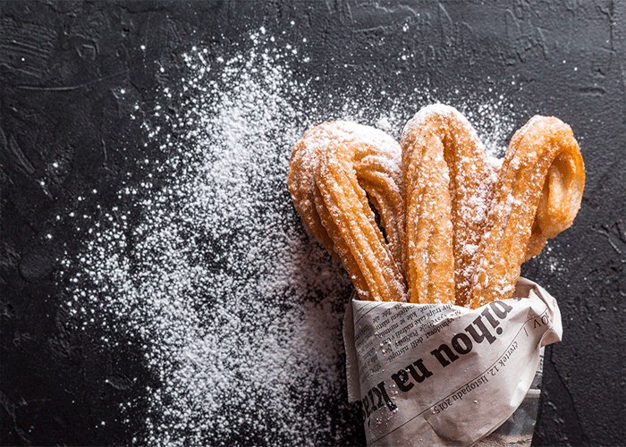
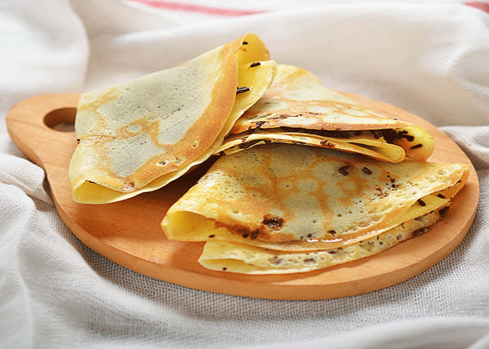
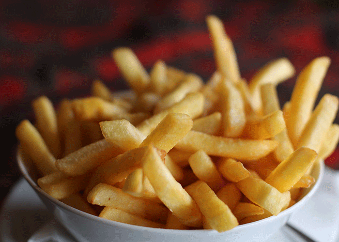

Nada como construir um belo hot dog completo, utilizando salsichas como tijolos, argamassa de
purê e uma bela cobertura do queijo processado que você preferir. Neste caso uma demão de cheddar
para ficar bonito.
Espetinho de carnes

espetinhos
A principal arma responsável pelo sucesso eterno dessa maravilha é o aroma. Basta alguém fazer um churrasquinho na esquina da sua casa que seu estômago é automaticamente transportado
para lá pelo cheiro.
Milho cozido

MIlho cozido
Um potinho de milho cozido com uma boa colherada de manteiga às vezes é exatamente o que você precisa para te confortar no fim do expediente em direção ao transporte público.
Pipoca

Pipoca
Crocância e infância, uma textura e um sentimento nostálgico.
A pipoquinha é aquele alimento que te abraça e diz que está tudo bem a cada "crec-crec" que faz na sua boca.
Churros

churros
A pessoa que inventou o churros pensou: "Hmm, nossa ficou uma delícia, mas acho que ainda não está bom... E se eu juntar mais uma tonelada de doce de leite???"
- e foi assim que nasceu aquilo que faz você e o Chaves salivarem toda vez que ouvem a palavra "churros".
Tapioca

tapioca
A tapioca em si pode ser considerada só mais uma desculpa para o recheio, que é a estrela desse prato tão brasileiro e com infinitas combinações possíveis.
O céu é o limite para a tapioca.
Batata frita

batata frita
Um presente que você dá para si mesmo,
a batata frita representa aquele momento em que você preza apenas pelo prazer,
não pensando mais em nada.